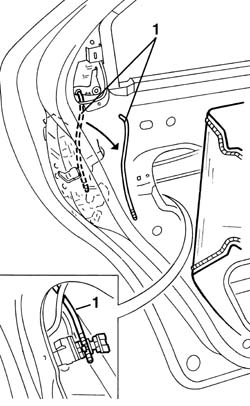
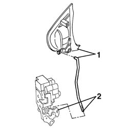

7010C64 handle link yo lock - r r
- Path
- Procedures > 70 FITTINGS > 7010 PASSENGER COMPARTMENT REAR SIDE DOORS > 7010C rear lock controls > 7010C64 handle link yo lock - r r
- Kind
- repair procedure (removal / refitting; the operation number is the code)
- Applies to
- all engines; all production periods
- Interactive page
- https://sloeber94.github.io/elrnDB-a156/en/#/3238655
Applies to: all engines; all production periods
 Removing
Removing
 Refitting
Refitting7010A04 rear side door water guard protection - r r or arrange with door panel removed
1. Disconnect the rod between the outer handle and the lock from both ends and save it.

Applies to: all engines; all production periods
Refitting
RemovingCheck that the link is undamaged.
1. Conect the upper end of the rod to the outer handle.
2. Connect the lower end of the rod to the lock.

Applies to: all engines; all production periods
7010A04 rear side door water guard protection - r r or arrange with door panel removed
Check that the outer handle and the lock are working properly.